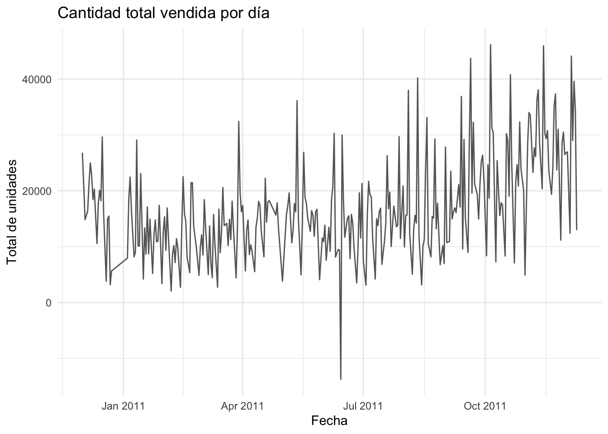
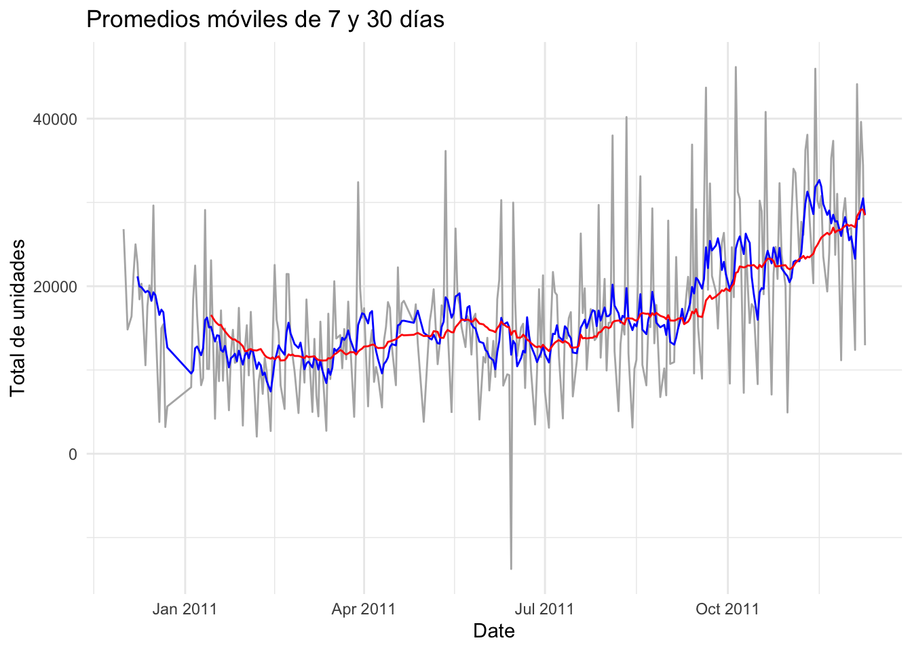
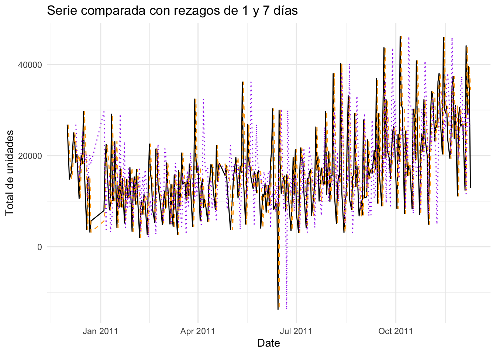
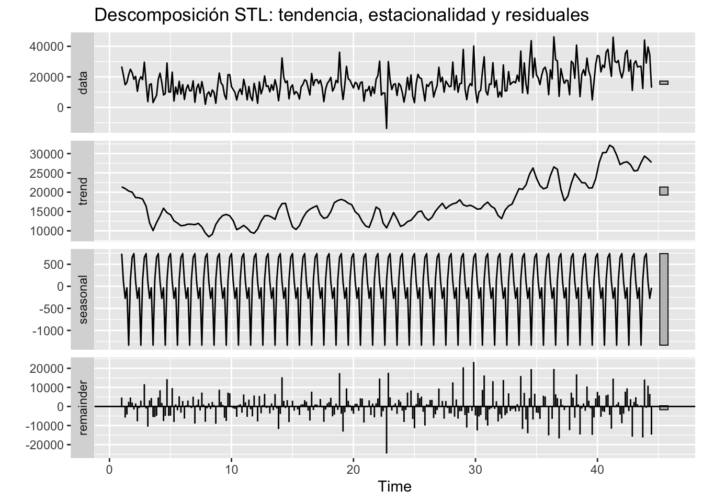

Capítulo 3 En busca de los datos
# Instalar una sola vez si no los tienes
# install.packages(c("tidyverse", "readxl", "lubridate", "zoo", "forecast"))
library(tidyverse) # dplyr, ggplot2, etc.
library(readxl) # leer archivos .xlsx
library(lubridate) # manejo de fechas
library(zoo) # promedios móviles
library(forecast) # funciones de series de tiempo# Leer la primera hoja (cámbiala con `sheet =` si hiciera falta)
retail <- read_excel("Online Retail 2.xlsx")
# Vistazo rápido a la estructura
dplyr::glimpse(retail)## Rows: 541,909
## Columns: 8
## $ InvoiceNo <chr> "536365", "536365", "536365", "536365", "536365", "536365"…
## $ StockCode <chr> "85123A", "71053", "84406B", "84029G", "84029E", "22752", …
## $ Description <chr> "WHITE HANGING HEART T-LIGHT HOLDER", "WHITE METAL LANTERN…
## $ Quantity <dbl> 6, 6, 8, 6, 6, 2, 6, 6, 6, 32, 6, 6, 8, 6, 6, 3, 2, 3, 3, …
## $ InvoiceDate <dttm> 2010-12-01 08:26:00, 2010-12-01 08:26:00, 2010-12-01 08:2…
## $ UnitPrice <dbl> 2.55, 3.39, 2.75, 3.39, 3.39, 7.65, 4.25, 1.85, 1.85, 1.69…
## $ CustomerID <dbl> 17850, 17850, 17850, 17850, 17850, 17850, 17850, 17850, 17…
## $ Country <chr> "United Kingdom", "United Kingdom", "United Kingdom", "Uni…## --- 1. Agregar la cantidad por día ----------------------------------
# Aseguramos que 'InvoiceDate' sea fecha-hora y creamos la columna Date
retail <- retail %>%
mutate(Date = as.Date(InvoiceDate))
# Sumamos la cantidad vendida por día
daily_sales <- retail %>%
group_by(Date) %>%
summarise(TotalQty = sum(Quantity, na.rm = TRUE)) %>%
ungroup()
## --- 2. Gráfico base de la serie diaria ------------------------------
library(ggplot2)
ggplot(daily_sales, aes(Date, TotalQty)) +
geom_line(color = "gray40") +
labs(title = "Cantidad total vendida por día",
x = "Fecha", y = "Total de unidades") +
theme_minimal()
library(dplyr)
library(zoo)
# Crear tabla con medias móviles
daily_ma <- daily_sales %>%
arrange(Date) %>%
mutate(
MA_7 = zoo::rollmeanr(TotalQty, 7, fill = NA),
MA_30 = zoo::rollmeanr(TotalQty, 30, fill = NA)
)
names(daily_ma)## [1] "Date" "TotalQty" "MA_7" "MA_30"library(ggplot2)
ggplot(daily_ma, aes(Date)) +
geom_line(aes(y = TotalQty), colour = "grey70") +
geom_line(aes(y = MA_7), colour = "blue") +
geom_line(aes(y = MA_30), colour = "red") +
labs(title = "Promedios móviles de 7 y 30 días",
y = "Total de unidades") +
theme_minimal()## Warning: Removed 6 rows containing missing values or values outside the scale range
## (`geom_line()`).## Warning: Removed 29 rows containing missing values or values outside the scale range
## (`geom_line()`). La media móvil de 30 días (línea roja) muestra una tendencia ascendente clara desde mayo-2011, mientras que la de 7 días (azul) revela picos semanales.
library(dplyr)
library(ggplot2)
daily_lag <- daily_sales %>% # usamos la tabla diaria original
arrange(Date) %>%
mutate(
Lag_1 = dplyr::lag(TotalQty, 1),
Lag_7 = dplyr::lag(TotalQty, 7)
)ggplot(daily_lag, aes(Date)) +
geom_line(aes(y = TotalQty), colour = "black") +
geom_line(aes(y = Lag_1), colour = "orange", linetype = "dashed") +
geom_line(aes(y = Lag_7), colour = "purple", linetype = "dotted") +
labs(title = "Serie comparada con rezagos de 1 y 7 días",
y = "Total de unidades") +
theme_minimal()## Warning: Removed 1 row containing missing values or values outside the scale range
## (`geom_line()`).## Warning: Removed 7 rows containing missing values or values outside the scale range
## (`geom_line()`). La superposición con el rezago de 1 día (naranja) indica alta autocorrelación diaria; el rezago-7 (morado) refuerza la periodicidad semanal.
library(forecast) # ya lo tienes cargado
library(ggplot2)
# 1. Convertir la columna TotalQty en un objeto ts semanal
ts_qty <- ts(daily_sales$TotalQty, frequency = 7)
# 2. Descomponer con STL
decomp <- stl(ts_qty, s.window = "periodic")
# 3. Graficar los componentes
autoplot(decomp) +
labs(title = "Descomposición STL: tendencia, estacionalidad y residuales") El componente seasonal presenta oscilaciones regulares cada 7 puntos, confirmando efecto semanal; la tendencia suavizada muestra un crecimiento paulatino en la demanda.